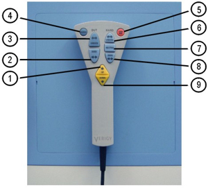

Remote control unit (V93000 Pin Scale / Smart Scale system)
The test head is shipped with a remote control to dock the DUT board and to move and dock the test head.
The remote control unit of a V93000 Pin Scale / Smart Scale system has the following functions:
- It controls the up/down movement of the test head (Large and Small Test Head systems only).
- It operates the docking mechanisms for the DUT board and for hard-docking.
The remote control unit is held by a magnet to the side of the test head, as shown in the figure below.

Legend
1 |
UP |
5 |
OVERRIDE |
2 |
DUT DOCK |
6 |
HARD UNDOCK |
3 |
DUT UNDOCK |
7 |
HARD NEUTRAL |
4 |
ENABLE |
8 |
HARD DOCK |
9 |
DOWN |
In the case of the Large and Small Test Head systems the remote control unit transmits two signals to the rack interface board: up/down and motor_on:
- The up/down signal switches two relays that reverse the polarity of the manipulator control voltage.
- The motor_on signal activates the control voltage, which controls the manipulator driver circuit. The driver circuit is powered by +24 V provided by the rack interface board, refer to Rack interface board supply voltages in the LTH STH Service Guide Part 2.
The remaining signals are passed to the test head and control the compressed air solenoids that operate the docking mechanism.
Functional changes
- Introduced in SmarTest 6.3.2